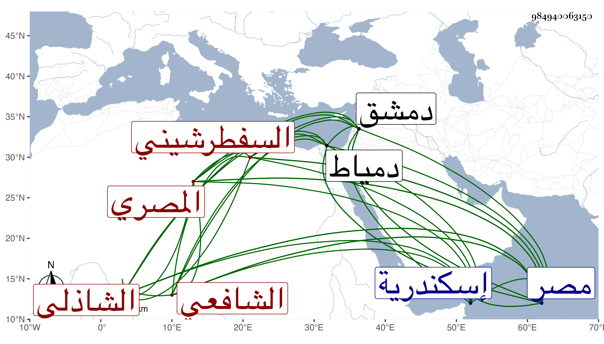

0902Sakhawi.DawLamic.ITO20230111-ara1.EIS1600.984940063150
Biography ID: 984940063150
946
علي بن محمد بن إبراهيم بن عثمان نور الدين أبو الحسن بن الشمس أبي عبد الله السفطرشيني ثم المصري الشافعي الشاذلي سبط النور الأدمي والآتي أبوه . ولد في عاشر ذي الحجة سنة إحدى وتسعين وسبعمائة بمصر ونشأ بها فحفظ القرآن وتلا به على والده لأبي عمرو ولما صاهر أبوه الأدمي جعله شافعيا فنشأ ابنه على مذهب أبيه وجده لأمه وإلا فأسلافهم كانوا مالكية وحفظ التقريب للعراقي في أحاديث الأحكام والمنهاج الفرعي وألفية النحو وبعض التسهيل وغيرها ، وعرض التقريب على مؤلفه وكذا عرض على ولده أبي زرعة وجماعة أجازوا له والكمال الدميري والشهاب بن العماد وآخرين ممن لم يعين الإجازة في خطه وجود القرآن أيضا على الشرف يعقوب الجوشني ومظفر وغيرهما وبحث في المنهاج على أبيه وجده لأمه وابن العماد والشمسين الغراقي وابن عبد الرحيم وغيرهم وفي الألفية والتسهيل على والده أيضا ولم يكثر من ذلك وتكسب بالشهادة وقتا ثم أعرض عنها قبل موته بأزيد من ثلاثين عاما ، وحج وسافر إلى دمشق ودخل إسكندرية ودمياط وأم بمسجد صفي الدين بخط الصبانين من مصر ، وكان خيرا منجمعا عن الناس متقنعا بوظائف تركها له أبوه ، ولقيته بمصر فأخذت عنه بعض التقريب . مات في ذي الحجة سنة ستين رحمه الله وإيانا .
